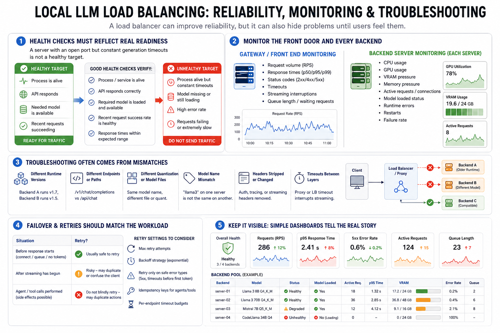

Reliability, Monitoring, and Troubleshooting
Connecting to LMS... Progress: in progress

Narration
A load balancer can improve reliability, but it can also hide problems until users feel them. Health checks should reflect real readiness: the process is alive, the API responds, the needed model is available, and recent requests are not failing at an unhealthy rate. A server with an open port but constant generation timeouts is not a healthy target.
Monitor both the front endpoint and every backend. At the gateway, track request volume, response times, status codes, timeouts, streaming interruptions, and queues. On each backend, track resource pressure, active requests, model-loaded status, runtime errors, restarts, and failures. Without backend visibility, you may know the service is slow without knowing why.
Many troubleshooting problems come from mismatches. A backend may run a different runtime version, expose a different endpoint, use a different quantization, or map the same model name to a different file. A proxy may strip a required header. A timeout between layers may interrupt streaming. Load balancing increases the need to keep assumptions consistent.
Failover and retries should match the workload. Retrying before a response starts may be safe. Retrying after streaming begins may confuse the client. Retrying an agent request that performed tool actions can duplicate work. Simple dashboards showing backend health, model availability, active requests, failures, and queue growth are enough to tell whether load balancing is helping or hiding trouble.